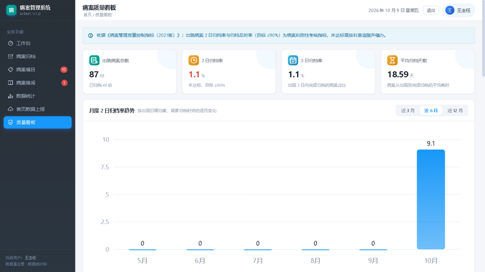
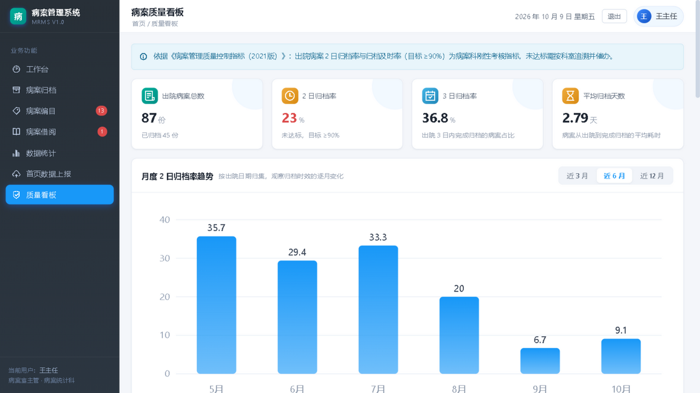
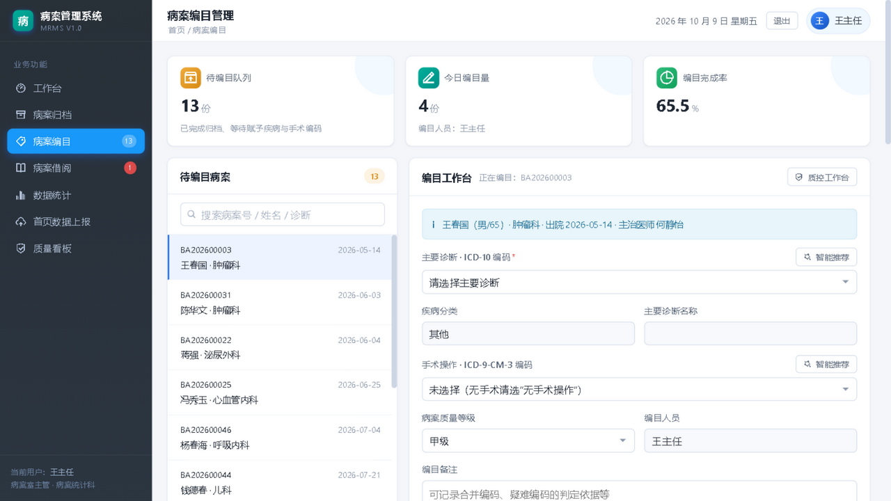
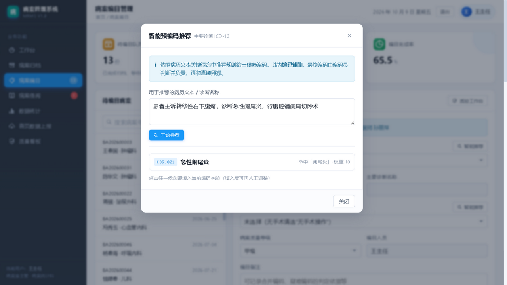
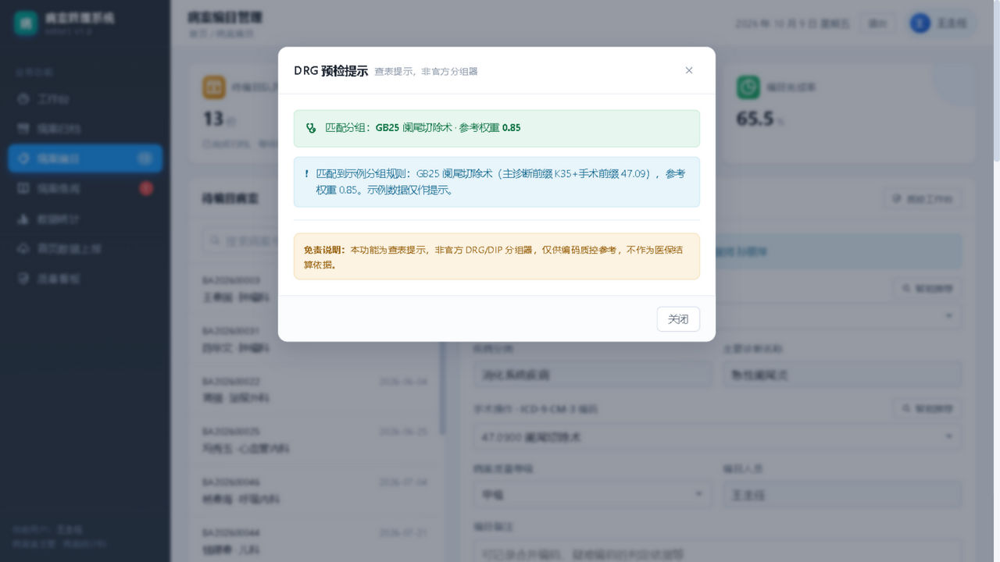
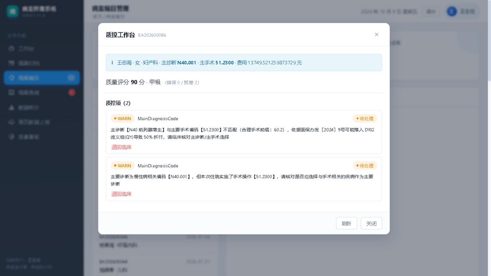
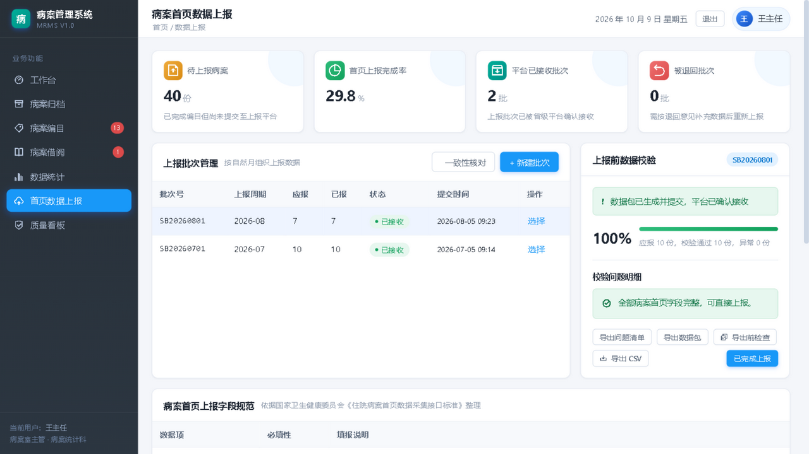

2026-10-09 功能扩展批次：补齐「用户需求 vs 系统匹配度」分析中标记为部分/缺失的 10 项能力。本页说明补了什么、界面接到哪一步与怎么操作。后端 10 项全部可用；界面接入分三档——已接入界面 / 部分接入 / 未接入（后端可用但无界面），未接入的项在下方逐条标注，不做粉饰。
来源：docs/research/user-match.html 匹配度矩阵中标记为「部分 / 缺失」的需求项（编号 3/4/5/6/7/8/10/16/17/23）。编号 9（上报前校验）原已满足，未列入。「界面状态」列按前端代码逐条核对得出：已接入界面 = 有专属按钮或整页；部分接入 = 主流程可用但仍有接口未接界面；未接入 = 后端已生效或接口已封装，但界面无入口。
| # | 功能 | 类别 | 界面状态 | 界面入口位置（与代码一致） |
|---|---|---|---|---|
| 3 | 智能编码辅助（规则版预编码） | 编目智能化 | 部分接入 | 病案编目 → 编目工作台 →「主要诊断 · ICD-10 编码」行右侧「智能推荐」、「手术操作 · ICD-9-CM-3 编码」行右侧「智能推荐」；规则管理接口未接 |
| 4 | 首页条件必填校验 | 首页质控 | 未接入 | 无专属界面：后端在质控执行时自动判断（规则 8→13 条），结果只能在该病案的「质控工作台 → 质控项」列表里被顺带看到 |
| 5 | 质控退回返修闭环 | 首页质控 | 已接入界面 | 病案编目 → 编目工作台右上角「质控工作台」；或「最近完成的编目」表格行内「质控」 |
| 6 | 主诊断选择规则 + 主诊断-主手术匹配 | 首页质控 | 未接入 | 无专属界面：随质控自动执行，以 WARN 质控项形式出现在「质控工作台 → 质控项」列表中 |
| 7 | DRG/DIP 预分组（查表版） | 编目智能化 | 部分接入 | 病案编目 → 编目工作台底部「DRG 预检」（需先选主诊断，否则按钮禁用）；分组规则管理接口未接 |
| 8 | 上报数据导出（符合国家接口标准） | 首页上报 | 部分接入 | 首页数据上报 → 右侧「上报前数据校验」面板底部「导出前检查」、「导出 CSV」；当前为 18 列骨架，官方约 90+ 采集项 |
| 10 | 上报数据一致性核对 | 首页上报 | 部分接入 | 首页数据上报 →「上报批次管理」卡片头部（「新建批次」左侧）「一致性核对」，点后按选中批次的上报周期生成核对面板；/summary 近 6 月概览接口未接 |
| 16 | 病历质量评分（甲/乙/丙）+ 单项否决 | 首页质控 | 已接入界面 | 编目保存后工作台出现质量评分提示（病案号 · 分数 · 等级 · 错误/预警数，单项否决标红）；「质控工作台」弹窗顶部再次显示评分与等级 |
| 17 | 归档锁定 + 变更留痕 | 合规 | 未接入 | 归档锁定自动生效（归档后改首页/编目返回 409，弹错误提示）；变更留痕无界面，仅封装了 MRMS.ext.revisions，前端零组件调用 |
| 23 | 归档及时率看板 + 超期催缴清单 | 统计/时效 | 已接入界面 | 左侧导航第 7 项「质量看板」（工作台 / 病案归档 / 病案编目 / 病案借阅 / 数据统计 / 首页数据上报 / 质量看板） |
登录账号：admin / admin123（病案室管理员，全权限）· deptuser / 123456（科室医师，越权操作会提示 403）。注意：下列步骤中的按钮位置均以当前前端代码为准；标注为「未接入界面」的能力在本节 F 段单独说明，界面上找不到对应按钮属正常现象。
超期未归档催缴清单_N天_日期.csv。
质量看板（上半页）：四指标卡 + 月度 2 日归档率趋势 + 近 3/6/12 月切换
趋势卡按出院日期逐月归集：越近月份归档率越低，说明病案仍滞留在临床科室患者主诉转移性右下腹痛，诊断急性阑尾炎）K35.801 急性阑尾炎（命中「阑尾炎」）。弹窗顶部固定提示「此为编码辅助，最终编码由编码员判断并负责」——对应国家规范中「医师 / 编码员为责任主体」的要求。
界面入口：主要诊断行与手术操作行标签右侧各有一个「智能推荐」按钮
智能推荐：从自然语言病历文本中命中候选编码，可一键填入GET /api/code-suggestion-rules/page 与增删改接口已在 api-store.js 中封装（MRMS.ext.suggestionRulesPage），但没有任何组件调用——目前规则只能靠后端种子数据（23 条 ICD-10 关键词 + 8 条手术关键词规则）维护，界面无增删改入口。K35.801 + 主手术 47.0900 → GB25 阑尾切除术 · 参考权重 0.85。
DRG 预检：匹配到分组规则并给出参考权重，底部强制展示免责说明MRMS.ext.drgRulesPage（GET /api/drg-group-rules/page）同样只封装未调用，界面上无法查看或维护分组规则表（当前为后端种子灌入的 15 条示例规则）。WARN / ERROR）、异常描述、右侧当前处理状态标签
质控工作台：质量评分 + 质控项明细 + 退回 / 整改 / 复核三态闭环S 开头须填外部原因、以 P 开头须填体重孕周）也只能在这里被顺带看到。hqmsts_ 开头的 CSV 文件2026-08 周期显示「存在偏差」）；导出的 CSV 为每例一行、空值填 -，可直接对接上报流程。说明：官方上报通道需授权接口文档，当前为「符合标准的文件导出」，通道本身保留在防腐层（service/reportclient.go），文档到位后替换实现即可。
上报页：「上报批次管理」卡片头部的「一致性核对」，与「上报前数据校验」面板底部的「导出前检查 / 导出 CSV」 一致性核对面板：应报数 / 已报数 / 缺失数 / 上报后被改数，偏差时标红GET /api/report-consistency/summary（近 6 月概览）已在 api-store.js 封装为 MRMS.ext.reportConsistencySummary，但无组件调用，界面只能看单周期核对；② 导出的 CSV 目前是 18 列骨架，官方《住院病案首页数据采集接口标准》约 90+ 采集项，字段覆盖不完整（页面上「病案首页上报字段规范」卡片仅是说明表，不代表导出内容）；③ 「导出 CSV」在后端挂在 admin 组下，deptuser 点击会被 403 拦截，而前端按钮没有角色判断。S 开头（损伤中毒）须填外部原因、以 P 开头（新生儿）须填体重孕周。无专属界面，只能通过质控工作台里的质控项看到结果WARN 质控项形式出现GET /api/front-pages/:id/revisions 可用，api-store.js 已封装为 MRMS.ext.revisions，但前端零组件调用——没有任何变更历史界面，只能靠接口自行查询下列限制均由代码现状核实得出，不因答辩需要而淡化；其中第 1、3、4 条直接影响「界面看起来有没有这个功能」。
GET /api/front-pages/:id/revisions，返回前后快照），前端也封装了 MRMS.ext.revisions，但零组件调用——没有「变更历史」页签、没有 diff 视图WARN / ERROR 条目，与其它质控项混排，无法区分「这条来自条件必填规则」还是「这条来自主诊断规则」POST /api/qc-results/:id/return（退回临床）、POST /api/qc-results/:id/review（复核）、GET /api/report-batches/:id/export（导出 CSV）均挂在 ADMIN 组下，非管理员访问统一返回 403 无权限执行该操作/qc-results/:id/rectify（模拟整改）与 /report-batches/:id/export-check（导出前检查）对所有登录用户开放，不会 403admin 演示；若要展示 403，用 deptuser 主动演示「越权被拦」，并说明前端按钮尚未做角色隐藏-，文件名以 hqmsts_ 开头GET /api/front-pages/:id/revisions 可用，但暂无变更历史界面，前端只在 api-store.js 做了封装；同理，条件必填与主诊断规则没有专属界面，只能在质控工作台的质控项列表里看到。切勿在现场手点去找不存在的按钮。